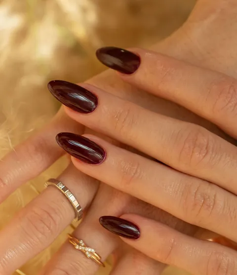
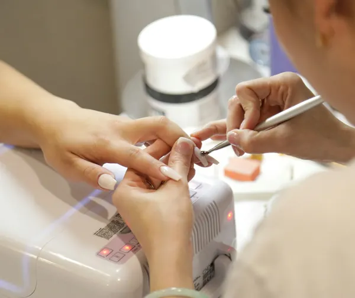
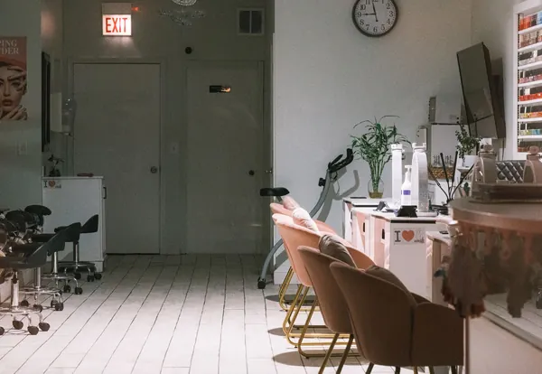

LacadosBrillo espejo
Atelier de uñas Gros, Donostia
A flor de piel.
Del carmín sobre seda al rosa translúcido. Cada manicura empieza con una muestra de color.
Muestrario de temporada
En la mesa de manicura

Damos forma a la uña, suavizamos el contorno y aplicamos un esmalte clásico. El último paso es un masaje corto con aceite de almendras.
Pedir cita para este tratamiento: Manicura esencialPreparamos la uña y trabajamos un solo tono en capas finas de gel. Un sellado brillante deja el color uniforme hasta el borde.
Pedir cita para este tratamiento: Lacado en gelSobre una base translúcida trazamos a mano una punta de marfil o de color. Ajustamos la curva al largo y a la forma de cada uña.
Pedir cita para este tratamiento: Francesa a pulsoElegimos una paleta de dos o tres tonos y dibujamos el motivo a pincel. La sesión incluye la preparación de la uña, el diseño y el acabado.
Pedir cita para este tratamiento: Nail art de autor
El atelier Gros, Donostia
Imaginamos Orvela en el barrio de Gros, a unos pasos del Cantábrico. Sobre la mesa descansan las limas de cristal y los pinceles. Las muestras de esmalte van junto a la ventana, donde se aprecia hasta el último matiz.
Reserva por WhatsApp
Elige el tratamiento y, si quieres, un diseño de la colección. El mensaje se escribe solo: lo envías y te confirmamos el hueco.
Barrio de Gros, Donostia. Te mandamos la dirección exacta con la confirmación.
Antes de tu cita
Con cuidados normales suele aguantar entre dos y tres semanas. Te damos un aceite de cutícula para casa y te contamos cómo alargarlo.
Sí, y nos ayuda mucho. Mándala con el mensaje de la cita y te decimos qué tratamiento encaja y cuánto tiempo necesitamos.
Claro. Avísanos al pedir la cita: la retirada con cuidado añade unos quince minutos a la sesión.
Escríbenos por WhatsApp en cuanto lo sepas. Si hay hueco, movemos la cita sin problema.